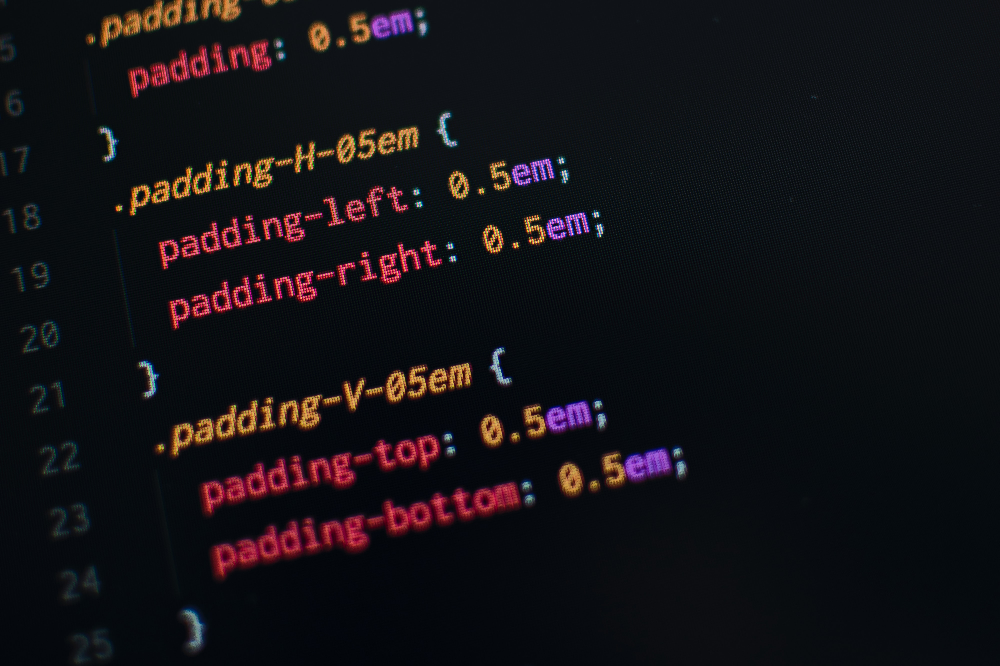

CSS is designed to enable the separation of present ation and content, including layout, colors, and fonts. [3] This separation can improve content accessibility, provide more flexibility and control in the specificat ion of presentation characteristics, enable multiple web pages to share formatting by specifying the rele vant CSS in a separate .css file, and reduce complexi ty and repetition in the structural content.
Separation of formatting and content also makes it feasible to present the same markup page in different styles for different rendering methods, such as on-s creen, in print, by voice (via speech-based browser or screen reader), and on Braille-based tactile dev ices. CSS also has rules for alternate formatting if the content is accessed on a mobile device.
[4] The name cascading comes from the specified priorit y scheme to determine which style rule applies if mo re than one rule matches a particular element.
This c ascading priority scheme is predictable.
The CSS specifications are maintained by the World W ide Web Consortium (W3C).
Internet media type (MIME t ype) text/css is registered for use with CSS by RFC 2318 (March 1998). The W3C operates a free CSS validation service for CSS documents.
[5] In addition to HTML, other markup languages support t he use of CSS including XHTML, plain XML, SVG, and XU L.